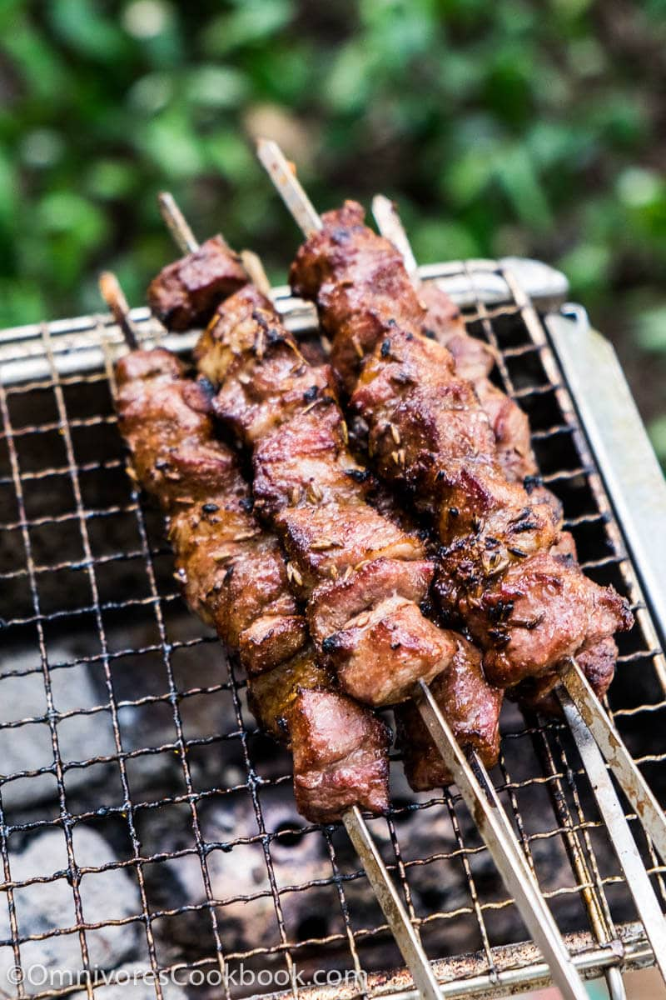

Lamb Skewer
Description
My best friend, who is very taoyan, loves this food! The recipe is taken from Omnivores Cookbook.
Ingredients
- 1 pound of lamb meat
- 1/2 sliced onion
- 2 tablespoons of whole cumin seeds
Marinade
- 2 tablespoons of peanut oil
- 2 tablespoons of light soy sauce
- 2 tablespoons of cornstarch
- 2 teaspoons of cumin powder and extra for grilling
- 2 teaspoons of chili powder and extra for grilling
- 1/2 teaspoon salt
- 1/4 teaspoon Sichuan peppercorn powder (optional)
Directions
- Combine oil, soy sauce, cornstarch, cumin powder, chili powder, and salt in
a small bowl. Mix well.
- Trim fat from the lamb meat if necessary.
Cut lean part into 1.5 cm cubes.
Cut fat into thin pieces half the size of the lean pieces.
-
Thread the lamb cubes closely onto skewers, alternating
between lean meat and fat cubes.
-
Spread onion inside a 1-gallon ziploc bag.
Place lamb skewers on top of the onion.
Pour the marinade over tha lamb. Massage the bag so the lamb is covered evenly with the mariande.
Seal both the sides of the bag and place upside down,
the onions facing up.
Let marinate for 30 minutes at room temperature or overnight in the fridge.
- Transfer the lmab skewers onto the grilling grate, one finger's width apart.
Flip frequently until the lamb turns dark brown on all surfaces.
Move to indirect fire.
Generously sprinkle a layer of cumin powder, then chili powder.
Flip, then sprinkle another layer of cumin powder.
Sprinkle whole cumin seeds onto the lamb for extra flavor, if using.
Grill until the meat is cooked through.
-
Serve immedaitely. Or move to the side of the grill without coal to keep warm.